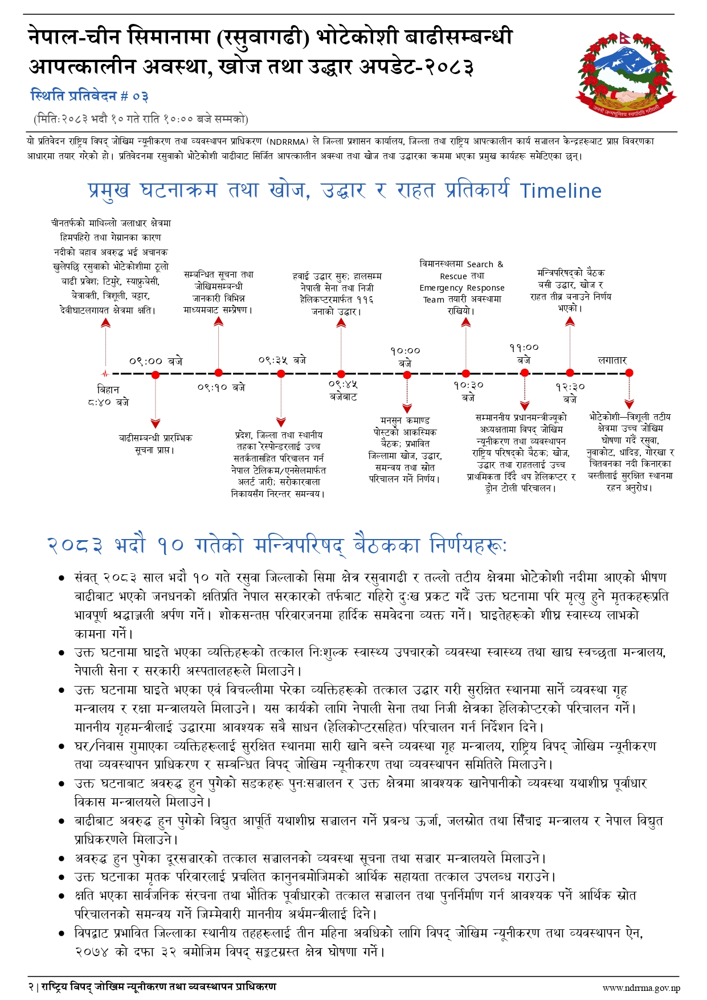
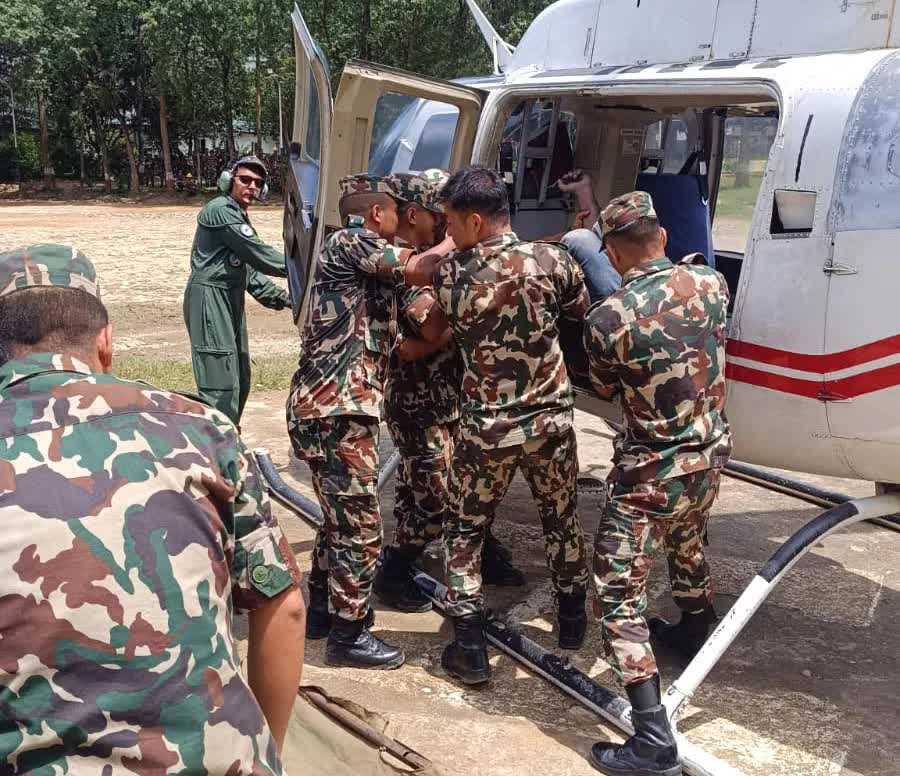
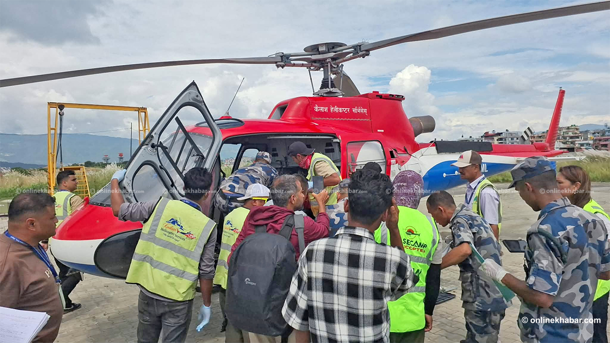
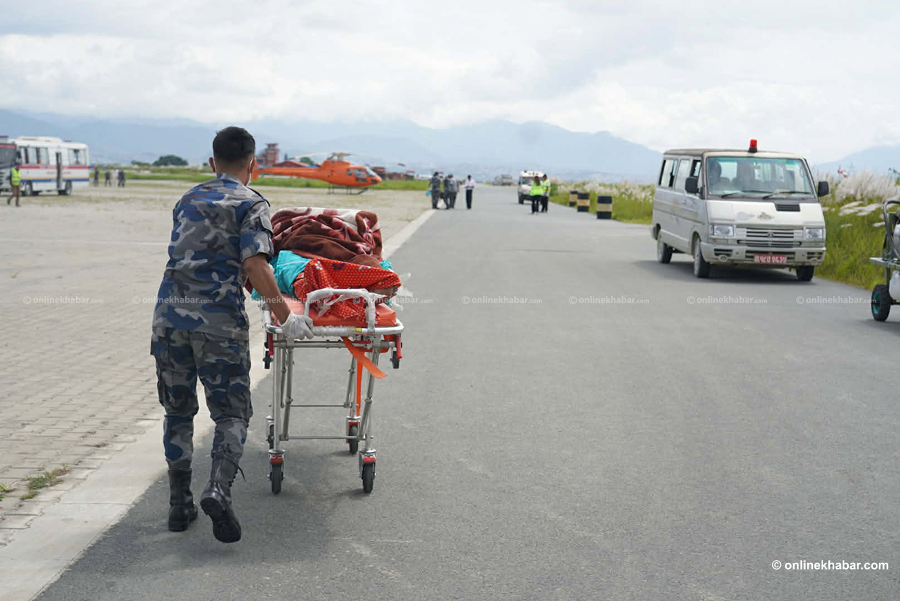
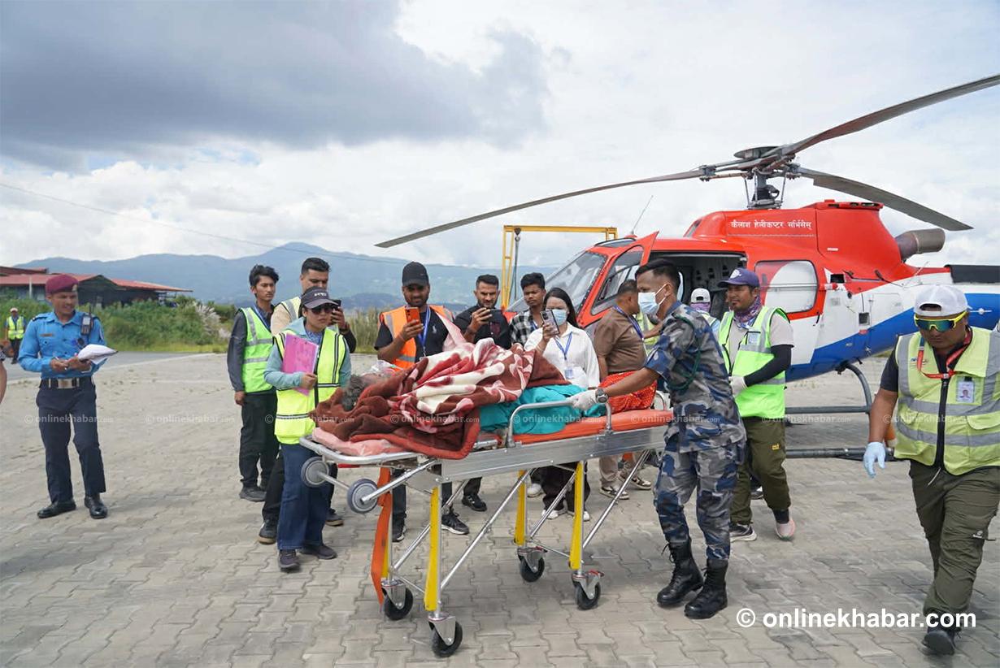
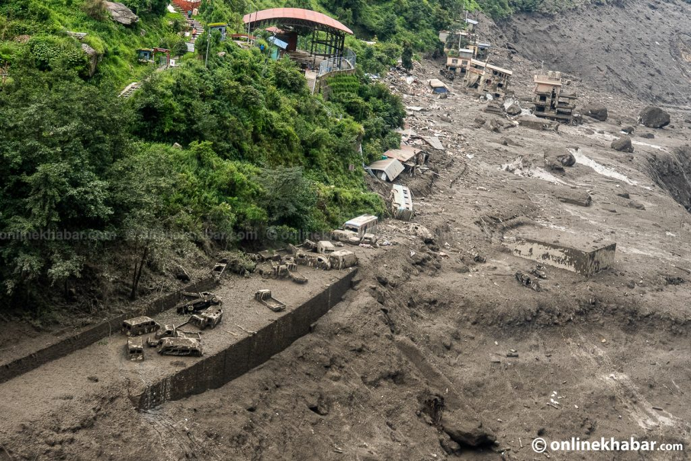
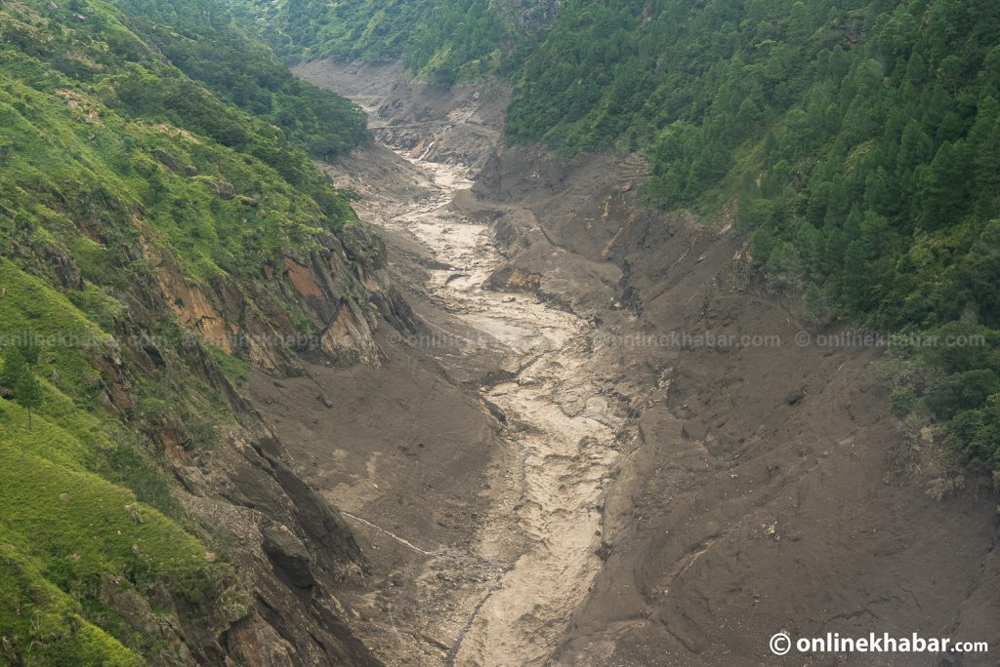
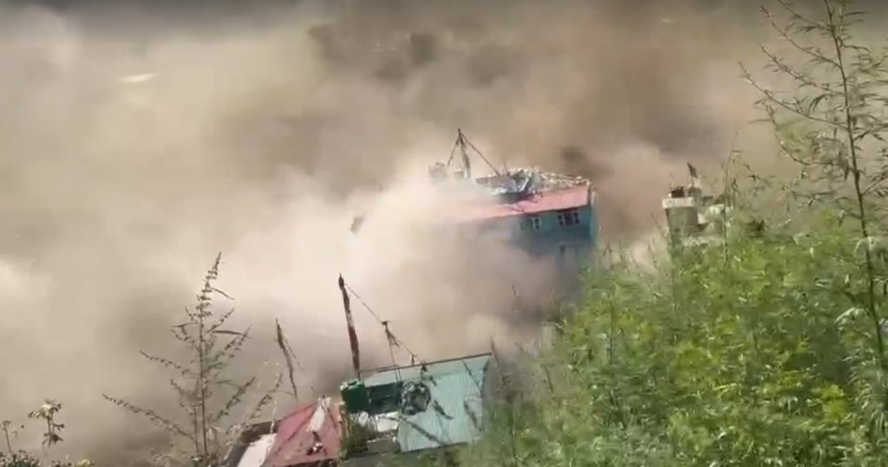
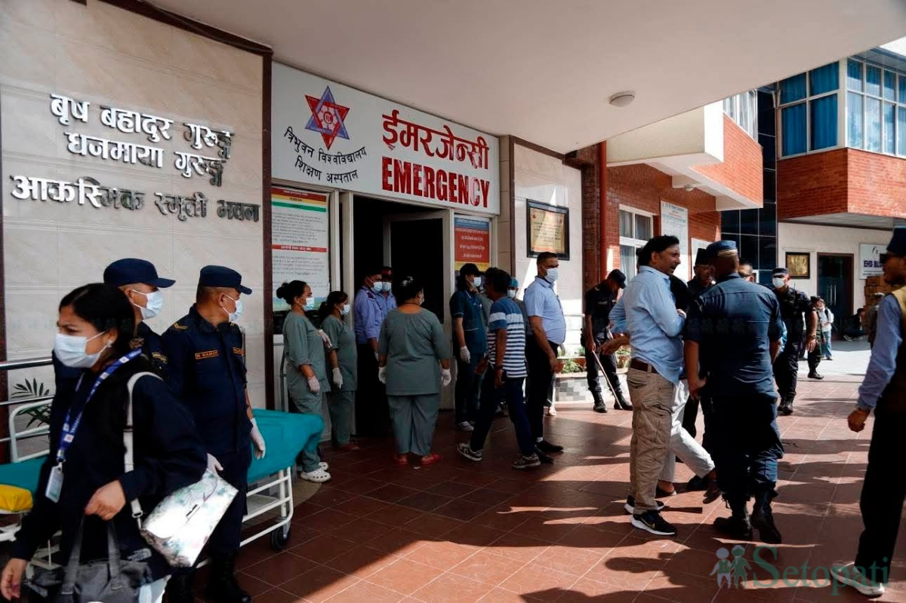

उद्धार, राहत, सडक, स्वास्थ्य र नीतिगत निर्णय
NDRRMA १७ भदौ ०९:०० शव १,११४ (अघिल्लो NDRRMA १६ भदौ १८:०० शव १,०५० / १३:०० शव १,००३ / ०९:०० शव ९८७ / १५ भदौ १८:०० शव ९३९ / १५ भदौ ०९:०० शव ९०३ इतिहास)। घाइते २९२ · सम्पर्कविहीन ३,९१६ · उद्धार ११९९३ · जनशक्ति २१,३१४। सेना हवाई ४३६४ (विदेशी २७३ · नेपाली ४,०९१) विस्तृत। SitRep हेलि १९७६ / नागरिक १५५२ / विमान १४ इतिहास।
NDRRMA / गृह १७ भदौ ०९:०० — सरकारले जिल्लालाई नगद: रसुवा १ करोड · नुवाकोट १ करोड · धादिङ ५० लाख · जिल्ला २.५० करोड लेबल। १५ पालिका ६ करोड ७५ लाख लेबल · दोस्रो किस्ता थप ६ करोड ७५ लाख सोही १५ पालिकालाई (जिल्ला/पालिका नगद)। सामग्री: ३७ ट्रक · ३७ बोलेरो · १ सेप्टेम्बर १४ सवारी लेबल; हेलि राहत ९ उडान। अघिल्लो ३२ ट्रक इतिहास। इन्धन: डिजेल ४९,००० · पेट्रोल १९,००० · हवाई १३,०००। अघिल्लो इन्धन ३५,००० / १५,००० / ९,००० · ४२,००० / १८,००० / ६,००० · ४५,००० / २०,००० / ९,००० · २५,००० / २१,००० / १०,००० इतिहास। NTC क्षति ११० टावर सबै सञ्चालन। Ncell ७८ मध्ये ७५ सञ्चालन। अघिल्लो टावर क्षति १९८ · सञ्चालन १४५ इतिहास। गल्छीमा बाढी मापन केन्द्र १। होल्डिङ सेन्टर जम्मा ३,४५३: नुवाकोट २४६६ · रसुवा ३९८ · काठमाडौं ३२९ · धादिङ २६०। · नुवाकोट १ करोड · धादिङ ५० लाख · जिल्ला २.५० करोड लेबल। १५ पालिका ६ करोड ७५ लाख (प्रधानमन्त्री कोष होइन · )। सामग्री: ३७ ट्रक · ३५ बोलेरो; हेलि राहत ८ उडान; सञ्चार सेट। इन्धन: डिजेल २३,००० · पेट्रोल २२,००० · हवाई १,५००। १३ भदौ २ टन उत्तरगया–धुन्चे। गल्छीमा बाढी मापन केन्द्र १। टावर क्षति १९८ · सञ्चालन १४५। अघिल्लो नुवाकोट डिजेल ३६,००० / पेट्रोल २५,००० / हवाई १०,००० / बोलेरो १३ इतिहास।









प्रधानमन्त्री कार्यालय ब्रिफिङ · साँझ ७:०० · १० भदौ २०८३
रसुवा बाढी बुलेटिनस्वतन्त्र नागरिक पाना। सरकार होइन। हराएको/भेटिएको फारम, WhatsApp वा इमेल। उद्धारका लागि १२३४।
हराएको रिपोर्ट अपडेट गर्नुहोस् WhatsApp इमेल